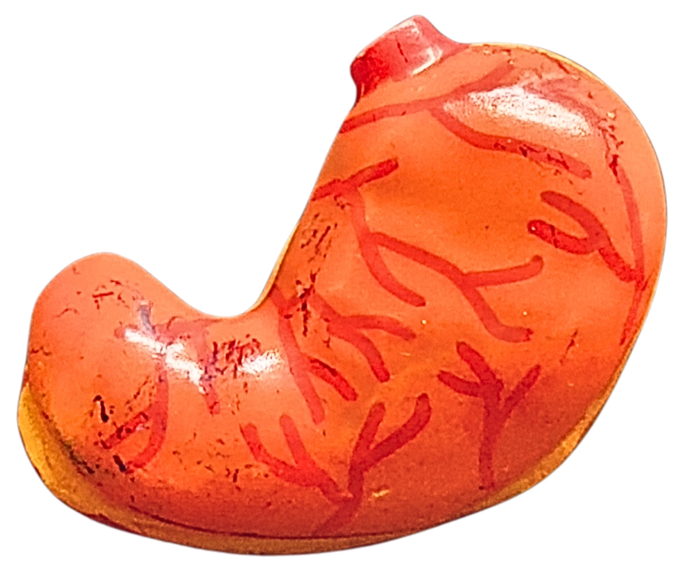

- The stomach is a pouch-like structure, capable of holding a maximum volume of about 3 liters. It stores and processes food.
- The stomach wall consists of four main layers:
- the serosa
- The muscularis externa notably thick and strong, composed of three layers: :
- Longitudinal muscle
- Circular muscle
- Diagonal muscles
- The submucosa
- The mucosa (stomach lining) contains numerous gastric glands that secrete gastric juices.